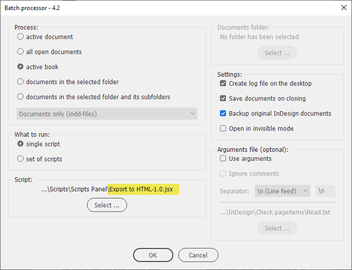
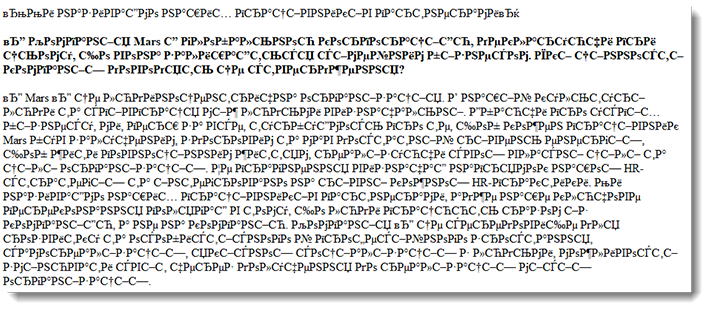

Export to HTML for business.ua site
Written and tested in InDesign 2020 by Kasyan
A script for the batch processor that can also be used without it as a regular script against the current document (don’t select anything in this case because of a bug in InDesign).

Recently I got a new duty of posting on our site the materials prepared for printing in our magazine. This process is done in Joomla’s admin panel. At first, I tried to export text to RTF format and copy-paste it from Word, but encountered a bug: in Ukrainian text, for some unknown reason, a lot of question marks appeared randomly. To streamline the process, I developed a script.
Here’s the scenario:
- Unlink all InCopy (icml) files to keep original links intact. A backup of indd file is created by the batch processor.
- Protect local styling: convert local formatting (bold, italic, etc,) to character styles. Here’s a separate Protect local styling script which does the same.
- Tag paragraph styles (map them to HTML tags)
- Tag character styles
- Export to HTML – to the same folder where the InDesign document is located. The HTML file is saved using the same name.
- Process the HTML file. This step performs a series of find-change operations on the HTML file which is treated as plain text. The purpose is to remove or replace tags, links, get rid of some entities, remove all the stuff before and after (including) the body tag, etc.
Images are also exported: at 150 ppi. Some design elements – graphs, small tables, etc. – require an additional step: grouping and setting rasterizing option to PNG at 150 ppi. I do it with my Set object export options script before running this script.
Finally, I open an HTML file in Dreamweaver in code view, select and copy all text, and paste it into the code tab in Joomla’s admin panel. Of course, I still have to do some manual work, but it’s minimized.
Warning! In the latest version 2022 (17.0.1) I encountered a bug: in some files, for some unknown reason the text gets messed up like so:

Here I packaged a sample ‘before’ InDesign document and the exported HTML so you could play with it yourself if you wish.
Click here to download the script.